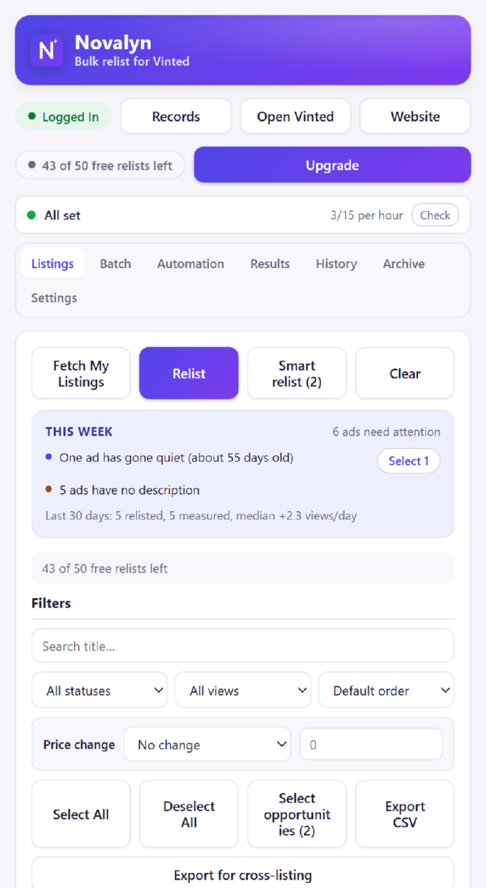
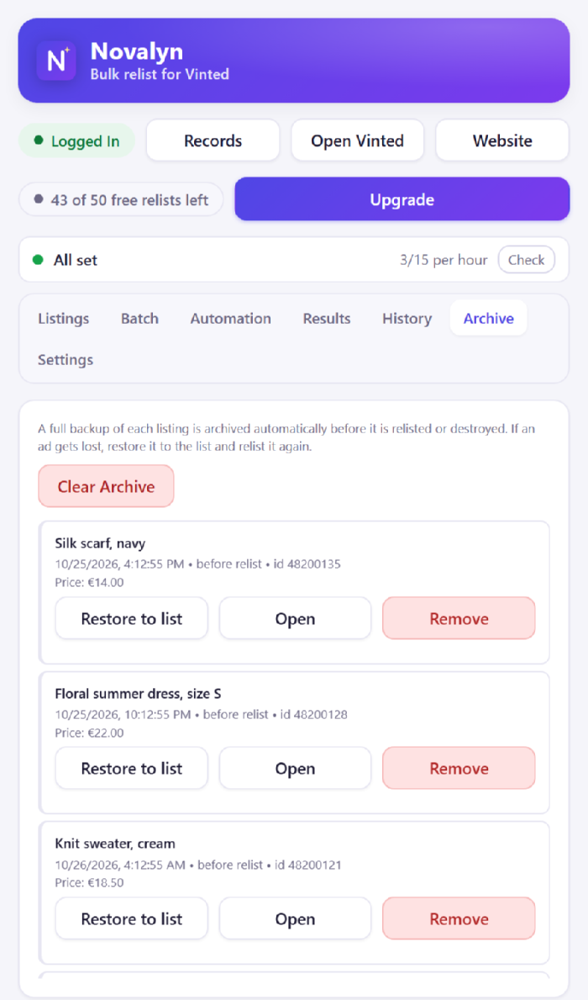
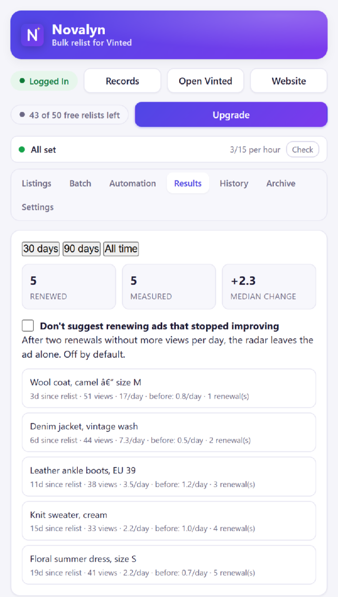

Bulk relist, one by one
Import your listings, tick the ones you want, and Novalyn works through them with progress, pause, resume and cancel.
Novalyn clones your own listings in bulk: photos, title, description, category, brand and size. Each copy is confirmed live, the original is archived, and only then is the old ad removed. If Vinted answers with something unclear, Novalyn checks your wardrobe instead of guessing.

Vinted has no one-tap relist. A “relist” is a clone: a new ad with the same content, and the old one deleted. Everything depends on when that delete happens.
A new ad is built from your own listing — photos re-uploaded, every field carried over.
The copy must come back with a real item id and be found in your wardrobe before anything else happens.
A complete backup of the original is stored on your computer first, so it can always be restored.
Only now is the old ad removed. If the copy cannot be confirmed, nothing is deleted and the batch stops.
This is where relisting tools usually go wrong: delete first, create second, and a failed upload leaves the seller with nothing to sell. Novalyn was built the other way round, and it will stop the whole batch rather than take that risk on your behalf.
Most relisting tools are scripts around the same two requests. The difference is what happens when the second one fails.
| What matters | By hand | Typical delete-first tool | Novalyn |
|---|---|---|---|
| The original is removed | After you uploaded the copy | Before the copy exists, in some tools | Only after the copy is confirmed live |
| A failed upload costs you | An afternoon | The ad itself | Nothing — the original stays, the batch stops |
| Full backup of each original | If you remembered | Usually not | Archived before every delete |
| Vinted asks for verification | You notice and stop | Often retried, which makes it worse | Stops and waits before touching Vinted again |
| Unclear answer from Vinted | Check your wardrobe | Guess, or try again | Reads your wardrobe, then decides |
| Did the relist actually work? | Compare by eye | No data | Views per day before vs. after, per ad |
| Sales, costs and profit | A spreadsheet | Not included | Built in, in your market's currency |
| Price to try it | Your time | Free, or a subscription | First 50 relists free, no account |
The middle column describes how the most commonly installed relisting tools work today (checked October 2026) — they change, so check before you buy one.
No mock-ups: every image below is the shipped extension, filled with sample data.


From your wardrobe to freshly relisted ads.
Open Vinted and click Fetch. Novalyn imports your own wardrobe with photos, prices and statuses.
Filter by status or views, search by title, tick what you want, optionally apply a price step, and press Relist.
Watch each job in the Batch tab. Anything unexpected is in the Archive, and the Results tab tells you whether it helped.
No spreadsheets, no re-typing, no re-uploading photos by hand.
Import your listings, tick the ones you want, and Novalyn works through them with progress, pause, resume and cancel.
Photos re-uploaded, plus title, description, category, brand, size, colour, condition and category attributes. Only the price can change.
A complete backup of every item is saved before anything is removed. If a listing goes wrong, restore it in one click.
No new tabs, no page jumps, no password to hand over. Novalyn works through Vinted's own web API from the page you already have open.
Rules by age, status, cooldown and price step. Novalyn prepares a run and waits for your approval, unless you turn that off.
Sales and costs per day, week, month or year — in the currency your own market uses, never summed across markets.
An optional dark appearance for Vinted's own pages. Photos keep their real colours, and it is off by default — a normal install changes nothing on Vinted.
Turn a listing into an eBay draft CSV (with the item specifics each eBay site expects) or a generic CSV for anywhere else.
A listing score names what is holding an ad back, and a wake-up list points at the ads worth renewing. It says nothing when the data is too thin.
Install it, relist 50 items, decide afterwards. Every plan then unlocks unlimited relisting.
Prices include VAT. Secure checkout and cards are handled by Stripe. Your licence key is emailed automatically — usually within a minute or two of payment (if it hasn't arrived, check your spam folder). See the refund policy and terms.
Including the ones that decide whether you should use this at all.
It can attract attention, and anyone who claims otherwise is selling you something. Vinted is a machine-checked marketplace: relisting a hundred items in ten minutes looks like a script, because it is one. Novalyn reduces the risk rather than pretending it does not exist — it pauses between items, keeps to the limits you set, stops for the day when you reach them, and stops immediately if Vinted answers with a verification challenge or a “too many requests”. It then waits instead of retrying into it, because retrying is what turns a warning into a block. Keep batches small and use it on your own ads.
Yes. The copy is a new ad, so it starts from zero. Novalyn stores the old numbers so the Results tab can show what the ad did before and after — which is the only way to know whether relisting is worth doing for your wardrobe.
The batch stops and the original is still online, with its backup in the Archive. Novalyn will not delete an original it could not replace — that is the single rule the whole engine is built around. You will see the exact step that failed (loading the original, uploading photos, publishing the copy, or the delete) in the batch log.
No. Novalyn is an independent tool for sellers and is not affiliated with, endorsed by, or sponsored by Vinted.
No. There is no account, and nothing about you or your listings is sent to us. The licence key is verified on your own device and your listing data never leaves your browser. See the privacy policy.
It's emailed automatically, usually within a minute or two of payment. If it isn't there, check your spam folder — that is where it most often ends up. Paste it into the licence card at the top of the Records page. No login.
Yes, one thing. Every renewal sends a new key: paste it into the same field. The previous key stops working on its expiry date, and relisting pauses until the new one is in (check spam if the renewal email is missing). A Lifetime licence never expires, so there is nothing to do later.
One payment, no renewals: unlimited relisting for as long as Novalyn is offered and keeps working with Vinted. We can't promise that for ever — Vinted can change its site or its rules in a way no relisting tool can follow. If that ever happened, the extension would stop being able to relist, and that is the limit of what a one-time purchase can cover. See the terms.
Relisting pauses until you add a licence key. Your listings, records, history and archived backups stay fully available — you just cannot start a new relist.
Yes. See the refund policy for the window and how to ask.
Install it, click Fetch, tick a handful of ads and watch the first one go through. If it is not for you, uninstall it and nothing has changed on your account.
Add to Chrome — free See the popup first